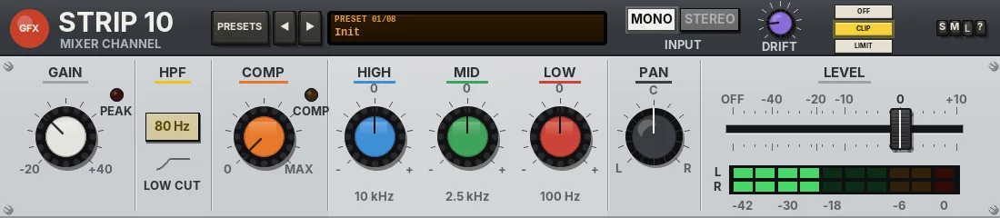

Strip 10
One channel of a compact analogue mixer, laid out sideways: a clean preamp, a low cut, a one-knob compressor, three-band EQ, pan and fader.

Overview
Strip 10 is one channel of a compact analogue mixer, laid out sideways, so its controls run left to right in signal order: GAIN, HPF, COMP, HIGH / MID / LOW, PAN and the LEVEL fader. It is in the spirit of the small ten-channel desks with a one-knob compressor on the mic inputs: simple, quick and honest, with nothing to get lost in.
The preamp is clean, with about 14 dB of headroom above 0 dBFS. At sensible levels it is transparent; push it hard and it adds a touch of warm, even-harmonic colour, then rounds off softly at its rails. The compressor is a single knob that lowers the threshold, raises the ratio and adds make-up gain all together. The EQ is the broad, forgiving kind found on such mixers, with a fixed 2.5 kHz mid.
By default the channel is mono, like the real thing: the two inputs are summed and PAN places the result. Switch INPUT to STEREO and both sides run through the same strip, with PAN becoming a balance control.
Reach for it for
- Quick, no-fuss treatment of vocals, guitars, kick, snare and bass
- Podcast and spoken-word voices that need levelling and a little presence
- Clearing rumble with a single low-cut key
- A touch of preamp warmth from pushing GAIN hard
- Placing a mono source in the stereo field
Controls
The header
- PRESETS
- Opens the list of factory presets (a click on the preset display does the same).
- ◄ / ►
- Step to the previous or next preset (wrapping round).
- Preset display
- The LCD shows the preset number (PRESET 01/08) over its name.
- MONO / STEREO (INPUT)
- MONO (the default) sums the two inputs at -6 dB each, so a mono source on a stereo track passes at unity, and PAN places it. STEREO runs both sides through the same strip, with the compressor linked, and PAN becomes a balance control (the title changes to BAL). Switching between them crossfades, so it never clicks.
- DRIFT
- How much the mixer's supply wanders, 0 to 100% (15% by default). See Drift below. Its value shows beside it while you touch it.
- OFF / CLIP / LIMIT
- The final stage: nothing, a soft clipper at -0.3 dBFS (the default, no latency), or a lookahead limiter that holds the peaks at -0.3 dBFS (3 ms latency, compensated by REAPER). While the output clips, the CLIP key flashes red.
- S / M / L
- Panel size: small, medium or large. The panel also scales to fit the plugin window. A new instance opens at L.
- ?
- Opens a pop-up with the design credit, the GFX website address and the address of this manual. Click anywhere to close it.
GAIN
- GAIN (cream cap)
- The preamp, -20 to +40 dB (0 dB by default). Clean at sensible levels; driven hard it adds a little even-harmonic warmth, then a soft, round limit.
- PEAK
- A red LED. It lights, and holds for a moment, when the signal after the preamp or after the EQ reaches -3 dBFS.
HPF
- 80 Hz (LOW CUT)
- Switches in an 80 Hz high-pass filter, 12 dB per octave, to clear rumble, handling noise and boom. Off by default. It crossfades in and out, so it never clicks.
COMP
- COMP (orange cap)
- The one-knob compressor, 0 to MAX (0 by default). Turning it up lowers the threshold from -2 to -26 dBFS, raises the ratio from 1:1 to 4:1 and adds automatic make-up gain, matched for peaks around -12 dBFS. While you touch it, it shows the ratio and threshold (e.g. 2.5:1 -14 dB). It has a fast, musical attack (about 5 ms), a medium release (about 160 ms) and a soft knee, and it holds its peaks briefly so low notes do not ripple. At 0 it is out of circuit completely.
- COMP LED
- An amber LED that glows brighter the more gain reduction there is.
EQ: HIGH, MID, LOW
A broad three-band EQ, after the compressor. Each knob has a centre mark at 0; the gains glide smoothly, so you can turn them while the track plays.
- HIGH (blue cap)
- A high shelf at 10 kHz, -15 to +15 dB (0 dB by default).
- MID (green cap)
- A broad bell at 2.5 kHz (fixed), -15 to +15 dB (0 dB by default).
- LOW (red cap)
- A low shelf at 100 Hz, -15 to +15 dB (0 dB by default).
PAN
- PAN / BAL (small cap)
- L 100 to R 100, centre (C) by default. In MONO it is a constant-power pan pot, set so the centre is unity (hard left or right is +3 dB on that side). In STEREO it becomes BAL: unity in the centre, the far side fading out as you turn.
LEVEL
- LEVEL fader
- The channel fader, OFF (-inf) to +10 dB, 0 dB by default. It has a real fader taper, printed OFF, -40, -20, -10, 0 and +10, with 0 dB at three quarters of the travel. Drag the cap sideways (Shift for fine moves), click the slot to jump there, use the mouse wheel, or double-click for 0 dB. While you touch it, its value replaces the LEVEL title.
- L / R meter
- Two rows of ten LEDs showing the output level, -42 to 0 dBFS (green, then amber from -6, red at the top).
Drift
DRIFT lets the mixer's supply wander slowly, as it never quite sits still on real hardware. Each part of the circuit feels it a little differently: the preamp gain eases by up to 0.3 dB, the EQ gains by up to 3% (and their frequencies by a hair), and the fader level very slightly. At 0% the channel stays exactly where you set it; higher settings also make the wander a little faster.
Knobs: drag up or down (Shift for fine moves) or use the mouse wheel; double-click to reset a knob to its default. Values show while you hover over or turn a control.
Presets
Presets set GAIN, HPF, COMP, the EQ, PAN and LEVEL. INPUT, DRIFT and the output stage are left as they are, except by Init.
- Init
- Everything back to the defaults: flat, compressor off, centre, 0 dB, MONO, DRIFT 15%, CLIP.
- Vocal
- Low cut in, a moderate squeeze, +3 dB of high, a little mid and -2 dB of low.
- Acoustic Guitar
- Low cut in, light compression, a brighter top with the 2.5 kHz and 100 Hz areas pulled back.
- Kick
- +5 dB of low and +3 dB at 2.5 kHz for the beater, with medium compression.
- Bass DI
- Firmer compression, a softer top and a little more low and mid.
- Snare
- Low cut in, medium compression, +4 dB of high and +2 dB of mid for crack.
- Podcast Voice
- GAIN up 3 dB, low cut in and heavy compression for an even, upfront voice with presence.
- Keys
- A light touch: gentle compression, a little sparkle, a small mid dip and a hint of low.
Tips
- Set GAIN first: turn it up until the PEAK LED flickers on the loudest notes, then back it off a little.
- On almost anything other than kick and bass, press the 80 Hz key before you touch the EQ.
- The COMP knob's make-up gain is matched for peaks around -12 dBFS, so set GAIN to suit before judging how much compression sounds right.
- For a stereo source such as keys or an overhead pair, switch INPUT to STEREO, or the two sides will be summed to mono.
- Use the LEVEL fader, not GAIN, to balance the channel in the mix: GAIN changes how hard the compressor works.
- Set DRIFT to 0 for a static, repeatable channel.
File: gfx-strip-10.jsfx